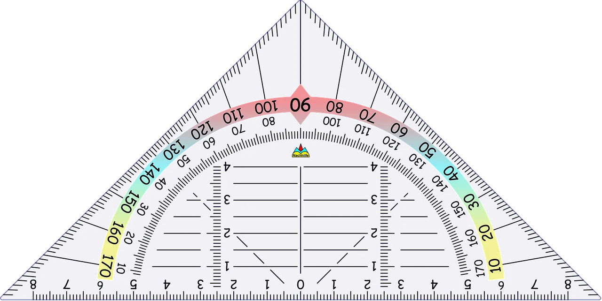

📄
EduHome
Lege rechts eine neue Tafel oder ein PDF an, um loszulegen.
Alle Daten bleiben lokal auf dem Gerät.

Lege rechts eine neue Tafel oder ein PDF an, um loszulegen.
Alle Daten bleiben lokal auf dem Gerät.

PDF wird geladen…